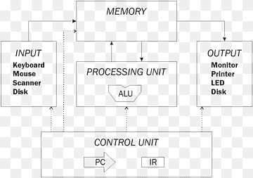
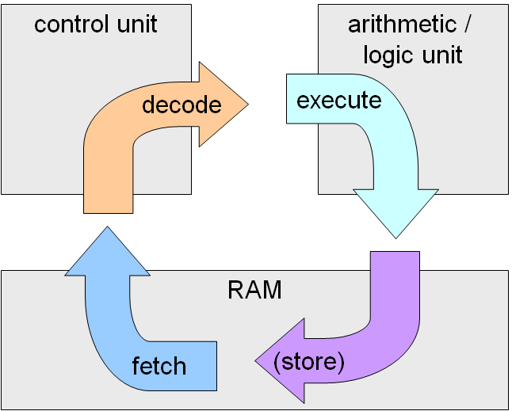

L'architettura di von Neumann, proposta dal matematico John von Neumann nel 1945, è il modello di riferimento per la maggior parte dei computer moderni. Questa architettura definisce la struttura base di un elaboratore elettronico, introducendo il concetto rivoluzionario di "programma memorizzato".
Contesto Storico
John von Neumann sviluppò questa architettura mentre lavorava al progetto EDVAC presso l'Università della Pennsylvania. Il suo lavoro si basava sui progressi precedenti, come l'ENIAC, ma introdusse innovazioni fondamentali che ancora oggi influenzano il design dei computer.
Componenti Principali
Egli definì che un computer dovesse avere 3 componenti fondamentali per il suo funzionamento: la CPU, la memoria Centrale e l'unita di input e output.
Unità di Elaborazione (CPU):
Unità Aritmetico-Logica (ALU): Esegue operazioni matematiche e logiche
Unità di Controllo (CU): Coordina e controlla le operazioni del computer
Registri: Memoria ad accesso rapido per dati temporanei
Memoria Centrale:
Dati: Informazioni su cui il computer opera
Programmi: Sequenze di istruzioni eseguibili
Risultati intermedi: Dati temporanei durante l'elaborazione
Unità di Input/Output Gestisce la comunicazione con dispositivi esterni
Caratteristiche Principali
Programma memorizzato: Dati e istruzioni sono memorizzati nella stessa memoria, permettendo al computer di modificare il proprio programma
Elaborazione sequenziale: Le istruzioni vengono eseguite una dopo l'altra, in ordine
Architettura general purpose: Può eseguire diversi tipi di programmi senza modifiche hardware

Schema dell'architettura di Von Neumann
Ciclo di Esecuzione
Il ciclo base di esecuzione, noto come ciclo fetch-decode-execute, comprende:
Fetch: Prelievo dell'istruzione dalla memoria
Decode: Decodifica dell'istruzione per determinare l'operazione da eseguire
Execute: Esecuzione dell'istruzione, che può includere operazioni aritmetiche, logiche, di trasferimento dati o di controllo del flusso

Il ciclo Fetch-Execute in dettaglio
Vantaggi
Semplicità concettuale: Facilita la progettazione e la comprensione
Flessibilità: Può eseguire una vasta gamma di programmi
Universalità: Adattabile a diverse applicazioni
Evoluzione Moderna
L'architettura di base è rimasta sostanzialmente invariata, ma sono state introdotte numerose ottimizzazioni:
Cache multi-livello: Riduce il tempo di accesso alla memoria
Pipeline: Permette l'esecuzione parzialmente sovrapposta delle istruzioni
Esecuzione fuori ordine: Ottimizza l'uso delle risorse della CPU
Conclusione
Nonostante le sue limitazioni, l'architettura di von Neumann rimane il più grande esempio da seguire nell'informatica moderna. La sua flessibilità e universalità hanno permesso lo sviluppo di computer sempre più potenti e versatili, adattandosi alle esigenze in continua evoluzione dell'era digitale.